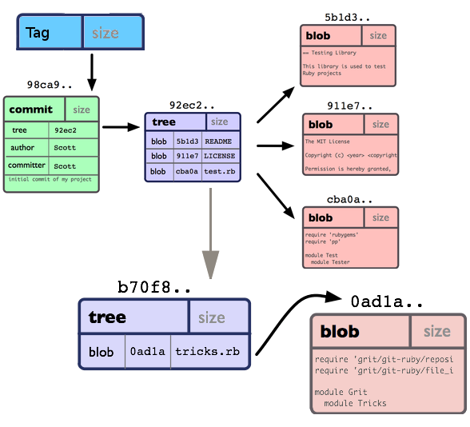
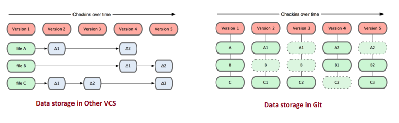

GIT
A la découverte de l'outil de gestion de version
Créé par Tony MEMBOT via l'API de présentation Reveal.js
Suivons l'histoire vraie de Robin
Création d'un site internet
- Indéxer ses films préférés
- Trotro le coquin / Robocar Polly fait des bêtises / ...
- Evolutif
- Critique de série
- Réseau social
- Création d'une crypto-monnaie ...
Première version
Une première évolution ...
- Ajout de bloc de publicité un peu partout sur le site
- Nécessite l'inclusion de plusieurs librairies javascript
- Modification de la majorité des pages
- Modification de la base de données
- Etc.
... qui se passe mal

Il faut revenir en arrière !
- Trop de fichiers modifiés
- Pas de sauvegarde du site avant la modification
- Des heures de bonheur en vue ...
Première VRAI évolution
Mise en place d'un sytème de gestion de version
Robin part à la chasse et tombe sur GIT
Pourquoi choisir GIT ?
Il était une fois l'histoire de GIT

Il était une fois l'histoire de GIT
- 2002 : Linus Torvalds utilise BitKeeper pour Linux, logiciel propriétaire.
- Début 2005 : BitKeeper arrête sa version gratuite.
- Avril 2005 : Linus Torvald crée GIT, répondant à ses besoins (en 5 jours).
- Système de fichier évolué
- Décentralisé
- Libre
- Dernière version : 2.15.1 (28/11/2017)
Centralisé VS décentralisé

Les ingrédients de GIT
- Tout est SHA1 : Identifiant unique de chaque objet
- Blob : contenu des fichiers
- Tree : répertoire de blob et/ou autre tree
- Commit :
- Un Tree
- 0 ou N commits parents
- Un message de description
- Tag
Les objets GIT
Cheminement des commits

Particularités
- Tout est ajout
- Même les suppressions de fichiers / dossiers
- Même les merge
- Les liens / commit déférencés sont automatiquement supprimés
Différence de stockage
Git est optimiser pour ...
- Être rapide
- Être robute
- Gérer un grand nombre de fichier
- Réaliser des développements distribués
- Rendre trivial la gestion des branches et des merge
- Sa compatibilité : SVN / CVS / HTTP / SSH / ...
... mais l'est moins pour
- Gérer les gros fichiers binaires
- Son côté non "user friendly" / brouillon aux premiers abords
Robin est convaincu, il part sur GIT

Mise en place de GIT
Installation
- Linux
sudo apt-get install git - Windows (émulation)
https://git-scm.com/
Paramétrer GIT
- Locale (repository)
git config --local - Global (user)
git config --global - Système (tout users)
git config --system
Identifiez vous !
git config --global user.name t.membot
git config --global user.email tmembot@gmail.com
Get Started
git init
touch readme.txt
git status
git add readme.txt
git status
git commit -m "My first commit !"
git status
git log
Maîtriser les bases
(init) Initialiser un nouveau repo
git init
- Permet d'initialiser un repository vierge.
- Crée un dossier ".git"
- Initialise une branche nommée "master"
- Peut être créé dans un dossier contenant déjà des dossiers/fichiers
Dossier .git
- Seulement présent à la racine du projet
- Contient :
- config : Fichiers de configuration (style .ini)
- objects/* : Repository des objets
- refs/heads/* : Branches
- refs/tags/* : Tags
- logs/* : Logs
- refs/remotes/* : Tracking des remotes
- index : le "cache index" (staging)
- HEAD : pointeur sur un commit de la branche courante (parent du prochain commit)
Les options intéressantes
- Options :
-
- --bare : Création d'un repository sans arbre de travail.
- --shared : Partager son repository.
Note : Pour obtenir de l'aide sur une commande
git [command] --helpLa zone de staging
Git status
git status
Git add
git add [filename]
- Permet d'ajouter des fichiers dans la zone d'index (staging)
- Permet d'ajouter des portions de code dans la zone d'index
- Ignore les fichiers / dossiers du .gitignore
Les options intéressantes
- Options :
- -A | --all : Ajout de toutes les modifications d'un seul coup
- -p | --patch : Ajout partiel de code dans un fichier
- -f : Force l'ajout d'un fichier contenu dans le .gitignore
Git checkout
git checkout [filename]
Git commit
Les options intéressantes
- Options :
Git reset
Les options intéressantes
- Options :
Git pull
Les options intéressantes
- Options :
Git diff
Les options intéressantes
- Options :
Git revert
Les options intéressantes
- Options :
Git clean
Les options intéressantes
- Options :
Explorons les repos distants
Git clone
Commande permettant de dupliquer un repository distant.
C'est la branche par défaut (généralement nommée master) qui est récupéré
 https://git-scm.com/docs/git-clone
https://git-scm.com/docs/git-cloneSSH ou HTTPS ?
Git checkout
Git push
Git fetch
GIT ignore
- Git ignore
- Git ignore global (dans le fichier, partie core : excludesfile = ~/.gitignore_global)
- www.gitignore.io
Les commandes avancées
- branch
- stash
- merge
- tag
- mv
- rm
- log
Les commandes "experts"
- blame
- bisect
- archive
- gitk
- cherry-pick
Git flow
Ligne de commande ou IDE ?
Allons plus loin
git config --global alias.logall "log --graph --abbrev-commit --decorate --date=relative --format=format:'%C(bold blue)%h%C(reset) - %C(bold green)(%ar)%C(reset) %C(white)%s%C(reset) %C(dim white) - %an%C(reset) %C(bold yellow)%d%C(reset)' --all"
git config --global alias.wdiff "diff --word-diff"
[color] ui = auto